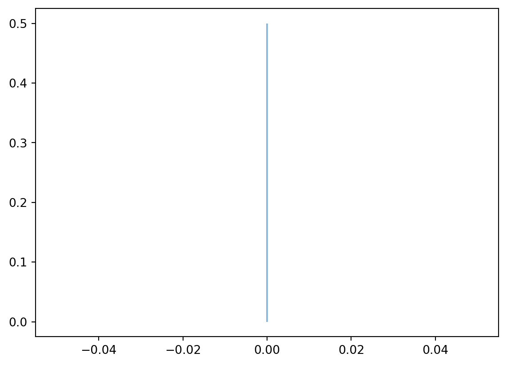
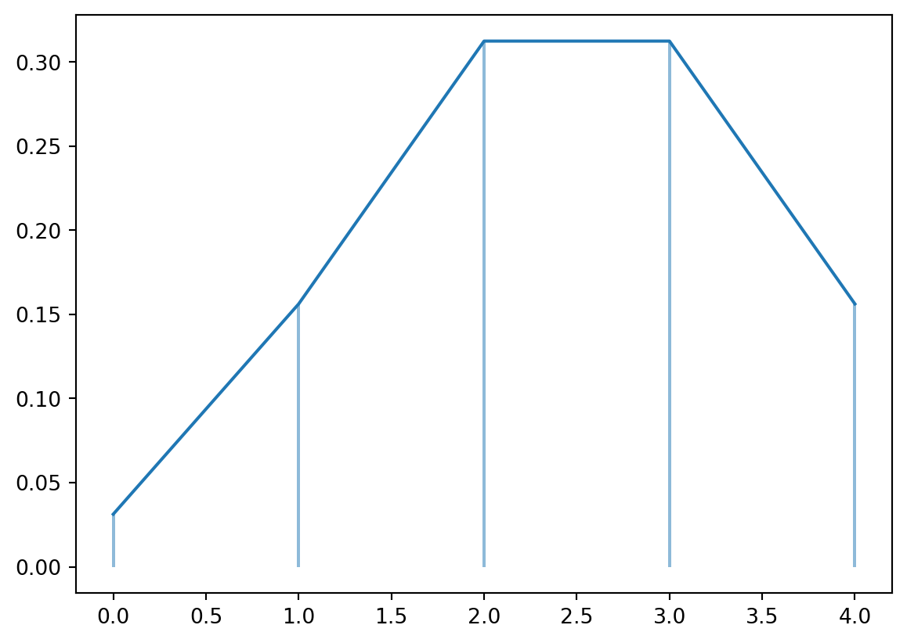
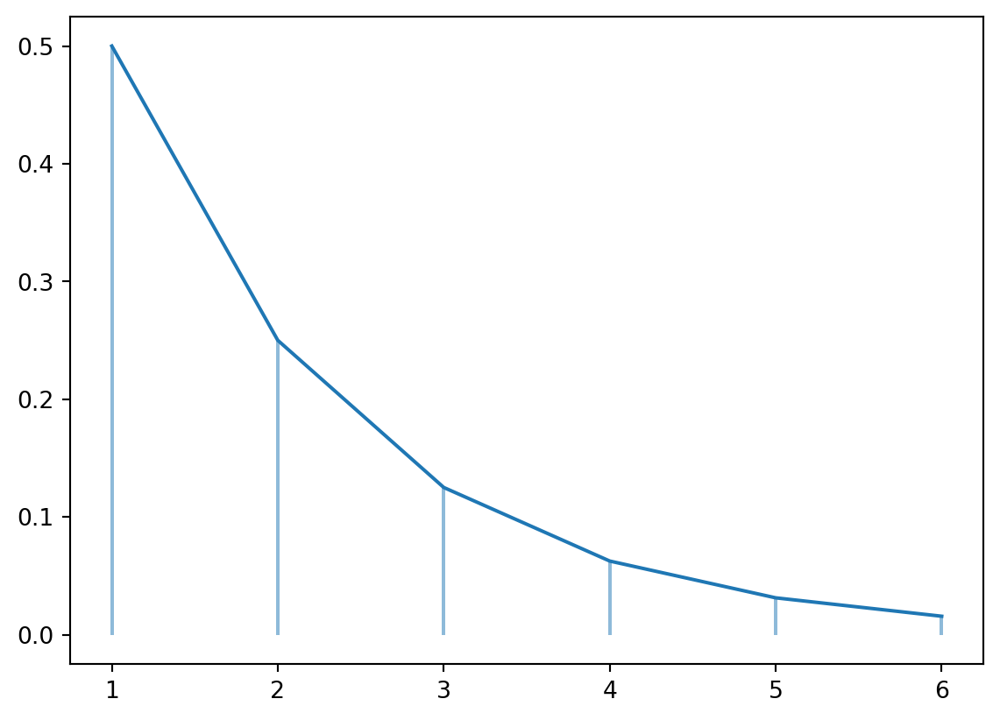
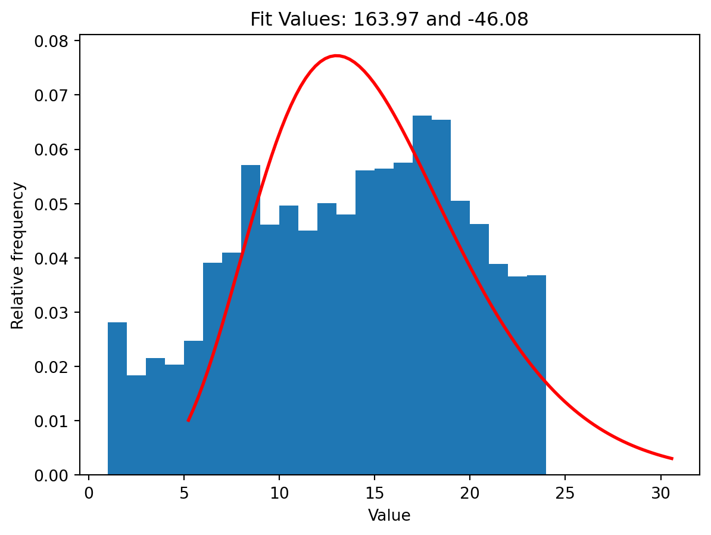

A collection of functions are available from scipy.stats.
Comparing the locations of two samples
ttest_ind: t-test for two independent samples
ttest_rel: t-test for paired samples
ranksums: Wilcoxon rank-sum test for two independent samples
wilcoxon: Wilcoxon signed-rank test for paired samples
Comparing the locations of multiple samples
f_oneway: one-way ANOVA
kruskal: Kruskal-Wallis H-test
Tests for associations in contigency tables
chi2_contingency: Chi-square test of independence of variables
fisher_exact: Fisher exact test on a 2x2 contingency table
Goodness of fit
goodness_of_fit: distribution could contain unspecified parameters
anderson: Anderson-Darling test
kstest: Kolmogorov-Smirnov test
chisquare: one-way chi-square test
normaltest: test for normality
Since R has a richer collections of statistical functions, we can call R function from Python with rpy2. See, for example, a blog on this subject.
For example, fisher_exact can only handle 2x2 contingency tables. For contingency tables larger than 2x2, we can call fisher.text() from R through rpy2. See this StackOverflow post. Note that the . in function names and arguments are replaced with _.
import pandas as pdimport numpy as npimport rpy2.robjects.numpy2rifrom rpy2.robjects.packages import importrrpy2.robjects.numpy2ri.activate()stats = importr('stats')jan23 = pd.read_csv("data/nyc_crashes_202301.csv")jan23["injury"] = np.where(jan23["NUMBER OF PERSONS INJURED"] >0, 1, 0)m = pd.crosstab(jan23["injury"], jan23["BOROUGH"])print(m)res = stats.fisher_test(m.to_numpy(), simulate_p_value =True)res[0][0]
The scipy.stats module is a SciPy sub-package used for probabilistic distributions and general statistical operations. SciPy, the parent module, is one of the largest and most well known packages available for Python, which deals with common science and engineering problems.
First, you will need to install scipy on your computer. To do so, use one of the following commands:
python -m pip install scipy
or
conda install scipy
depending on which tool you prefer. Then, you will need to import scipy.stats at the beginning of each python file like so:
from scipy import statsimport numpy as np
There are three different classes available in scipy.stats:
rv_continous, for continuous random variables
rv_discrete, for discrete random variables
rv_histogram, used to generate specific distribution histograms
8.2.1 Discrete Variables
First, lets talk about discrete variables. The default initialization variables are as folows:
The above is used to define your own discrete random variable. Scipy.stats has many built in already, including common ones such as:
Bernoulli – scipy.stats.bernoulli
%matplotlib inlineimport matplotlib.pyplot as pltimport numpy as npfig, ax = plt.subplots(1, 1)a =0.5## shape parameter, prob of a single successx = np.arange(stats.bernoulli.ppf(0.01, a), stats.bernoulli.ppf(0.99, a))rv = stats.bernoulli(a)ax.plot(x, rv.pmf(x), ms=8)ax.vlines(x, 0, rv.pmf(x), alpha=0.5)plt.show()

Binomial – scipy.stats.binom
fig, ax = plt.subplots(1, 1)n =5## number of trialsa =0.5## shape parameter, prob of a single successx = np.arange(stats.binom.ppf(0.01, n, a), stats.binom.ppf(0.99, n, a))rv = stats.binom(n, a)ax.plot(x, rv.pmf(x), ms=8)ax.vlines(x, 0, rv.pmf(x), alpha=0.5)plt.show()

Geometric – scipy.stats.geom
fig, ax = plt.subplots(1, 1)n =5## number of trialsa =0.5## shape parameter, prob of a single successx = np.arange(stats.geom.ppf(0.01, a), stats.geom.ppf(0.99, a))rv = stats.geom(a)ax.plot(x, rv.pmf(x), ms=8)ax.vlines(x, 0, rv.pmf(x), alpha=0.5)plt.show()

Hyper Geometric – scipy.stats.hypergeom
fig, ax = plt.subplots(1, 1)m =50## number of objectsn =17## number of type x objectsn2 =35## number of type x objects drawna =0.5## shape parameter, prob of a single successx = x = np.arange(0, n+1)rv = stats.hypergeom(m, n, n2)ax.plot(x, rv.pmf(x), ms=8)ax.vlines(x, 0, rv.pmf(x), alpha=0.5)plt.show()
All of these different random variables, including ones that you choose to define yourself, can be used with all of scipy.stats’ operations which will be discussed later.
The describe method returns a number of summary statistics: length of array, a tuple containing the min and the max, the mean and variance, the skewness, and kurtosis, which is the measure of tailedness in the data. There are a number of optional parameters in describe that can change how our results are found:
ddof – delta degrees of freedom, integer.
bias – boolean variable with default value True. If False, skewness and kurtosis are corrected for statistical biases.
nan_policy – options are {‘propogate’, ‘raise’, ‘omit’}, and they tell the method how to deal with NaN values. Propogate returns NaN, raise throws an error, and omit skips the value in the array.
We can also compute statistics of trimmed data, if we do not want to alter the dataset. For example, let’s say we only want to see the values between 20 and 80.
print("Trimmed mean: "+str(stats.tmean(array1, (20, 80))))print("Trimmed standard deviation: "+str(stats.tstd(array1, (20, 80))))print(array1)
As you can see, the array remains unchanged but we find a new mean and standard deviation with the values trimmed. Similar functions can be used:
tvar – takes array and limit tuple, returns trimmed variance
tsem – takes array and limit tuple, returns trimmed standard error
tmin – takes array and minimum limit, returns new minimum value above trimmed limit
tmax – takes array and maximum limit, returns new maximum value below trimmed limit
Further functions include iqr to compute the interquartile range of the data and sem which computes the standard error of the mean.
print("IQR: "+str(stats.iqr(array1)))print("Std Error of the Mean: "+str(stats.sem(array1)))
IQR: 27.75
Std Error of the Mean: 9.624043964063247
8.2.4 Frequency Statistics
There are several methods in scipy.stats related to frequency statistics. Relfreq and Cumfreq are used to create a relative frequency and cumulative frequency histogram, respectively. This can provide more insight on the data then a regular histogram would. An example is demonstrated below.
import matplotlib as pltimport matplotlib.pyplot as plt## Create an array of grades with frequency of 0.2 for 90, 0.3 for 80, and so onposs_grades = [90, 80, 70, 60, 50]grades = np.random.choice(poss_grades, 100, p=[0.2, 0.3, 0.3, 0.1, 0.1])print(grades)## Use cumfreq to find our variables for the Cumulative Histogramres = stats.cumfreq(grades, numbins=100)x = res.lowerlimit + np.linspace(0, res.binsize*res.cumcount.size, res.cumcount.size)## Use relfreq to find our variables for the Relative Histogramres2 = stats.relfreq(grades, numbins=10)x2 = res2.lowerlimit + np.linspace(0, res2.binsize*res2.frequency.size, res2.frequency.size)## Plot normal histogram vs our 2 special onesfig = plt.figure(figsize=(10, 4))ax1 = fig.add_subplot(1, 3, 1)ax2 = fig.add_subplot(1, 3, 2)ax3 = fig.add_subplot(1, 3, 3)ax1.hist(grades, bins=25)ax1.set_title('Histogram')ax2.bar(x, res.cumcount, width=res.binsize)ax2.set_title('Cumulative histogram')ax2.set_xlim([x.min(), x.max()])ax3.bar(x2, res2.frequency, width=res2.binsize)ax3.set_title('Relative frequency histogram')ax3.set_xlim([x2.min(), x2.max()])plt.show()
There are also two methods to use when checking percentile ranks:
percentileofscore – takes an array and a score as input, returns the percentile rank of the score
scoreatpercentile – takes an array and a percentile as input, returns the score at that percentile
array2 = np.random.randint(1,101,100)print(array2)print("The percentile of the score 90 is: "+str(stats.percentileofscore(array2, 90)))print("Score at the 90th percentile is: "+str(stats.scoreatpercentile(array2, 90)))
As you can see, the values differ. This is important information that can be used to determine more than just the IQR.
8.2.5 Statistical Tests
Finally, statistical tests are arguably the most useful part of the scipy.stats package. The most important correlation function is the one-way ANOVA function. As a reminder, one-way ANOVA (analysis of variance) is used to compare the means of two or more independent groups, with the goal of determining if the means are significantly different. It is a parametric test that can be tedious and complicated to do by hand, so the scipy.stats functionality allows us to save a lot of time.
The initial set up is as follows:
scipy.stats.f_oneway(*samples, axis=0)
It takes parameters *samples, which is used to represent the two or more arrays that you input, and axis. Axis is defaulted to 0, but if you set it to another number that will be the axis of the arrays upon which the test is applied. The f_oneway function returns the F statistic and the p value of the test.
F statistic is 2.3920989190674504
p value is 0.0813172700146769
If we were to run the test with an alpha level of 0.05, then our p value is not in the rejection region and we would be unable to say that the mean of the precipitation levels for these 4 samples over the last 128 years are significantly different.
Now, if we wanted to check the difference between the first, second, and third months of each quarter, we could formulate the arrays differently:
F statistic is [0.98374586 3.35080866 1.86738832]
p value is [0.43298199 0.05551278 0.18891543]
As you can see, the second months of each quarter have the widest variety. This doesn’t tell us much information about this dataset, but it is in general a useful tool.
Finally, we can perform many sample tests related to the statistical distributions found earlier. Scipy.stats focuses primarily on t tests.
One sample t-tests: scipy.stats.ttest_1samp
This calculatutes the mean of one group and tests it against the null hypothesis mean. It is initialized with an array and the popmean to test against, and there is an optional parameter called alternative with options ‘two-sided’, ‘less’, and ‘greater’. The choice here will tell the program in which direction the hypothesis test has been set up. If the hypothesis test is merely checking for a difference between the mean of the data and popmean, use the default ‘two-sided’. If you want to check if your data’s mean is less than or greater than the given popmean, use ‘less’ or ‘greater’, respectively.
Let’s say we want to check if our 2015 monthly precipitation data is, on average, less than 5 inches. We can initialize the null and alternative hypothesis as \(H_0 = \mu_1 \geq \mu_2\) and \(H_a = \mu_1 < \mu_2\). If we want to check against 95% confidence, we will check with a p-value of 0.05.
As you can see, our p-value is less than 0.05, so we can say with 95% confidence that the average monthly precipitation is less than 5.0 inches.
Two sample, independent t-tests: scipy.stats.ttest_ind
This test compares the means of two independent groups against each other. It is initialized with two arrays, and there is an optional parameter called alternative with options ‘two-sided’, ‘less’, and ‘greater’. The choice here will tell the program in which direction the hypothesis test has been set up. If the hypothesis test is merely checking for a difference between the means of the 2 data arrays, use the default ‘two-sided’. If you want to check if the first data mean is less than or greater than the second data mean, use ‘less’ or ‘greater’, respectively.
Let us now compare the 2015 monthly preciptation data against the 1895 data, and use two-sided to check if there is a difference. We can initialize our null and alternative hypothesis as: \(H_0 = \mu_1 = \mu_2\) and \(H_a = \mu_1 \neq \mu_2\). If we want to check against 95% confidence, we will check with a p-value of 0.05.
As you can see, our p-value is greater than 0.05, so we cannot say with 95% confidence that the average monthly precipitation in 2015 is different than that in 1895.
Kolmogorov-Smirnov test for goodness of fit: scipy.stats.ktest
This one-sample test compares the distribution of a sample vs a given distribution. The test takes as input an array and a callable distribution’s cdf. An example is below.
8.2.6 NYC crash data examples
Let’s try and use the Kolmogorov-Smirnov test for goodness of fit for checking our data of crashes by hour.
import pandas as pddf = pd.read_csv('data/nyc_crashes_202301.csv')df["HOUR"] = pd.to_numeric(df["CRASH TIME"].str.split(":").str[0])plt.hist(df['HOUR'], bins=24)plt.show()
As you can see, this sort of follows a chi-squared distribution. We can use the Kolmogorov-Smirnov test for goodness of fit to check how accurate this is.
p value threshold: 0.016098338682511194
KstestResult(statistic=0.9999999999949739, pvalue=0.0, statistic_location=23, statistic_sign=1)
Unfortunately, our p value does not reach the threshold, so we have sufficient evidence that the distribution does not follow a chi2 one.
parameters = stats.chi2.fit(df['HOUR']) plt.hist(df['HOUR'], bins=range(1, 25), density=True)plt.xlabel('Value')plt.ylabel('Relative frequency')plt.title('Relative frequency histogram')# xmin, xmax = plt.xlim()# x = np.linspace(xmin, xmax, 100)# p = stats.chi2.pdf(x, parameters[0], parameters[1])degrees_f =15# int(len(df['HOUR']) - 1) # degrees of freedomx = np.linspace(stats.chi2.ppf(0.01, degrees_f), stats.chi2.ppf(0.99, degrees_f), 100)y = stats.chi2.pdf(x, degrees_f)plt.plot(x, y, 'r-', lw=2, label='chi2 pdf')title ="Fit Values: {:.2f} and {:.2f}".format(parameters[0], parameters[1])plt.title(title)plt.show()

Clearly the fit is extremely loose, as evidenced by the dramatically low p-value found in the previous calculation, so we can once again dismiss the idea that our data follows a chi2 distribution.
We can also use statistical tests to draw some conclusions from the data. Let’s separate our huge dataset into smaller ones based upon borough to more easily split up the data.
## Create new dataframes for each boroughdf = pd.read_csv('data/nyc_crashes_202301.csv', index_col='BOROUGH')bronx = df.loc['BRONX']staten_island = df.loc['STATEN ISLAND']brooklyn = df.loc['BROOKLYN']manhattan = df.loc['MANHATTAN']queens = df.loc['QUEENS']## Test to make sure it worksprint(staten_island.head())
CRASH DATE CRASH TIME ZIP CODE LATITUDE LONGITUDE \
BOROUGH
STATEN ISLAND 01/01/2023 6:40 10305.0 40.585240 -74.093414
STATEN ISLAND 01/01/2023 1:18 10301.0 40.631510 -74.103874
STATEN ISLAND 01/01/2023 2:00 10306.0 40.583366 -74.108350
STATEN ISLAND 01/01/2023 13:00 10305.0 40.613980 -74.066050
STATEN ISLAND 01/01/2023 7:10 10301.0 40.648228 -74.084500
LOCATION ON STREET NAME CROSS STREET NAME \
BOROUGH
STATEN ISLAND (40.58524, -74.093414) HYLAN BOULEVARD BUEL AVENUE
STATEN ISLAND (40.63151, -74.103874) NaN NaN
STATEN ISLAND (40.583366, -74.10835) NaN NaN
STATEN ISLAND (40.61398, -74.06605) NaN NaN
STATEN ISLAND (40.648228, -74.0845) RICHMOND TERRACE SAINT PETERS PLACE
OFF STREET NAME NUMBER OF PERSONS INJURED ... \
BOROUGH ...
STATEN ISLAND NaN 1 ...
STATEN ISLAND 504 KISSEL AVENUE 0 ...
STATEN ISLAND 1955 RICHMOND ROAD 1 ...
STATEN ISLAND 1201 BAY STREET 0 ...
STATEN ISLAND NaN 0 ...
CONTRIBUTING FACTOR VEHICLE 2 CONTRIBUTING FACTOR VEHICLE 3 \
BOROUGH
STATEN ISLAND Unspecified NaN
STATEN ISLAND Unspecified NaN
STATEN ISLAND NaN NaN
STATEN ISLAND Unspecified NaN
STATEN ISLAND Unspecified NaN
CONTRIBUTING FACTOR VEHICLE 4 CONTRIBUTING FACTOR VEHICLE 5 \
BOROUGH
STATEN ISLAND NaN NaN
STATEN ISLAND NaN NaN
STATEN ISLAND NaN NaN
STATEN ISLAND NaN NaN
STATEN ISLAND NaN NaN
COLLISION_ID VEHICLE TYPE CODE 1 \
BOROUGH
STATEN ISLAND 4594485 Station Wagon/Sport Utility Vehicle
STATEN ISLAND 4594804 Sedan
STATEN ISLAND 4594854 NaN
STATEN ISLAND 4595229 Sedan
STATEN ISLAND 4603513 Sedan
VEHICLE TYPE CODE 2 VEHICLE TYPE CODE 3 VEHICLE TYPE CODE 4 \
BOROUGH
STATEN ISLAND Sedan NaN NaN
STATEN ISLAND Sedan NaN NaN
STATEN ISLAND NaN NaN NaN
STATEN ISLAND NaN NaN NaN
STATEN ISLAND Sedan NaN NaN
VEHICLE TYPE CODE 5
BOROUGH
STATEN ISLAND NaN
STATEN ISLAND NaN
STATEN ISLAND NaN
STATEN ISLAND NaN
STATEN ISLAND NaN
[5 rows x 28 columns]
Now, let’s perform an anova test to determine if the number of people injured on average differs between borough.
## Get arrays for each boroughbronx_injuries = bronx['NUMBER_OF_PERSONS_INJURED'].to_numpy()si_injuries = staten_island['NUMBER_OF_PERSONS_INJURED'].to_numpy()brooklyn_injuries = brooklyn['NUMBER_OF_PERSONS_INJURED'].to_numpy()manhattan_injuries = manhattan['NUMBER_OF_PERSONS_INJURED'].to_numpy()queens_injuries = queens['NUMBER_OF_PERSONS_INJURED'].to_numpy()## Perform one way ANOVAF, p = stats.f_oneway(bronx_injuries, si_injuries, brooklyn_injuries, manhattan_injuries, queens_injuries, axis=0)print("F statistic is "+str(F))print("p value is "+str(p))
If we were to check with 95% confidence, we can say that the means of each borough do differ.
Finally, we can use a test to compare boroughs against each other to draw more meaningful conclusions.
As you can see, our p value is too large to reject the null. Comparing the two means, we can see that they are similar so it makes sense why they are not rejected.
Let’s use a formula to specify the regression model as in R, and fit a robust linear model (rlm) instead of OLS. Note that the model specification and the function interface is similar to R.
If the model instance has been used for another fit with different fit parameters, then the fit options might not be the correct ones anymore .
For model diagnostics, one can check residual plots.
import matplotlib.pyplot as pltmyOlsFit = smf.ols(formula ="y ~ x1 + x2 + x3 + x4 + x5", data = df).fit()fig = plt.figure(figsize = (6, 6))## residual versus x1; can do the same for other covariatesfig = sma.graphics.plot_regress_exog(myOlsFit, 'x1', fig=fig)
A linear regression model cannot be applied to presence/absence or count data.
Binary or count data need to be modeled under a generlized framework. Consider a binary or count variable \(Y\) with possible covariates \(X\). A generalized model describes a transformation \(g\) of the conditional mean \(E[Y | X]\) by a linear predictor \(X^{\top}\beta\). That is \[
g( E[Y | X] ) = X^{\top} \beta.
\] The transformation \(g\) is known as the link function.
For logistic regression with binary outcomes, the link function is the logit function \[
g(u) = \log \frac{u}{1 - u}, \quad u \in (0, 1).
\]
What is the interpretation of the regression coefficients in a logistic regression? Intercept?
A logistic regression can be fit with statsmodels.api.glm.
Let’s generate some binary data first by dichotomizing existing variables.